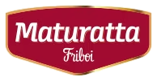
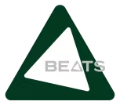
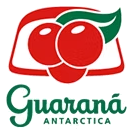
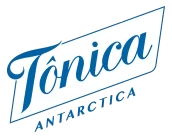
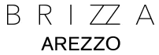
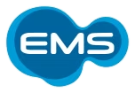
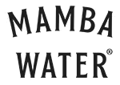

aqui o carnaval é
SCROLL
+
+
LINEUP
+
por que o nosso
Diferenciais
Open Bar & Food

Open bar de bebidas premium e open food com serviço de buffet completo.
Localização Setor 10

Posicionamento privilegiado na Sapucaí.
Transfer Exclusivo

Ida e volta do Meeting Point à Sapucaí, incluso no ingresso.
Meeting Point

Local ainda a ser divulgado — informação será comunicada com antecedência.
carnaval 2027
As datas
quem faz o nosso acontecer
Parceiros






